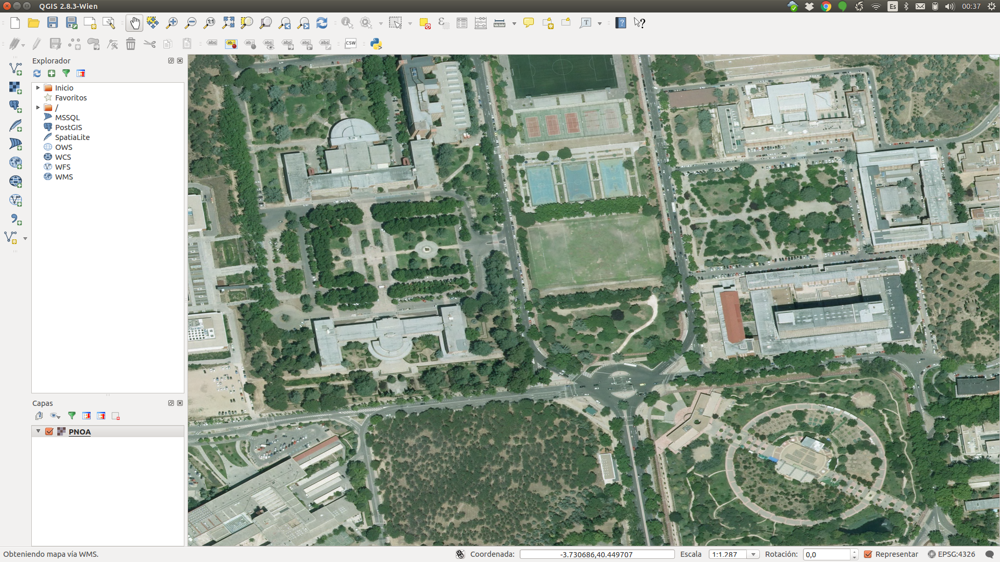
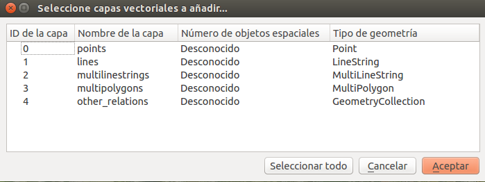
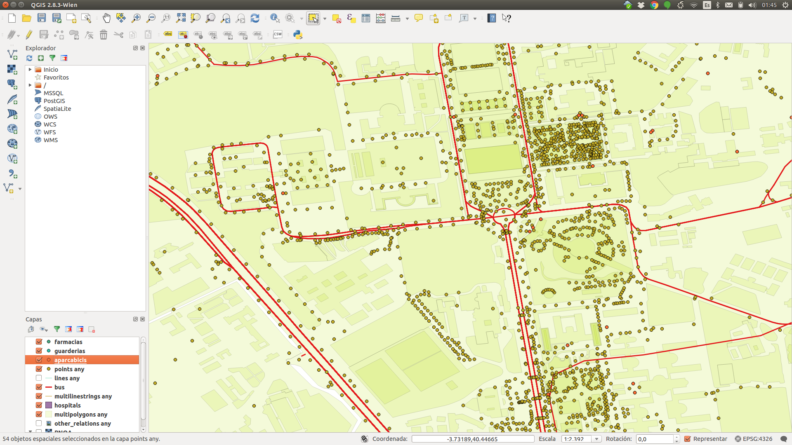

5. QGIS¶
Las últimas versiones de QGIS traen instalado por defecto el plugin que permite descargar datos desde OSM. Podemos acceder a él en la opción de menú Vectorial -> OpenStreetMap -> Descargar datos. Habrá que indicar las coordenadas de las esquinas del bounding box que queremos descargar o bien indicarle que descargue los datos correspondientes al area de pantalla visible en ese momento.
Una forma de seleccionar que bounding box queremos descargar puede ser elegir sobre las ortofotografías de la zona. Para ello, indicaremos a QGIS que queremos añadir una capa tipo WMS y buscaremos, en la ventana de selección que nos ofrece el programa, el servicio de mapas que queremos utilizar. En este ejemplo estamos utilizando la capa de ortofotografias PNOA de máxima actualidad procedentes del IGN. El resultado, tras cargar la capa y seleccionar el area buscado se puede ver en la imagen siguiente:
{kind=link}
Nota: En caso de dificultad para encontrar la capa del PNOA, se puede utilizar directamente la siguiente url:
A continuación procederemos a descargar los datos OpenStreetMap de la zona a un fichero en formato .osm. Tendremos que asignarle un nombre y ubicación al fichero y, tras aceptar, el fichero con los datos de OpenStreetMap quedará guardado en el disco en formato OSM.
Lo siguiente es abrir el fichero con QGIS. Para ello hay que seleccionar la opción ‘Añadir capa vectorial‘ y buscar el fichero que hemos descargado. Veremos que nos ofrece varias capas para seleccionar, según se ve en la figura siguiente:
{kind=link}
Podemos seleccionar solo alguna de ellas o pulsar en ‘seleccionar todo‘, con loque cargaremos todas las capas en QGIS.
A partir de ahí, podremos disponer de cada una de las capas para operar con ellas, visualizarlas, editarlas, editar su tabla de atributos, hacer búsquedas de elementos concretos a partir del valor de alguna de las etiquetas y cualquier otra acción que se pueda realizar sobre una capa vectorial.
{kind=link}
5.1. Seleccionar objetos espaciales por filtro¶
Una posibilidad es seleccionar una serie de elementos de una de las capas a partir del valor de alguna de las etiquetas. Una vez seleccionadas, podremos grabarlas de manera independiente en formato shapefile, por ejemplo. Esto se hace aplicando un filtro en la tabla de atributos de la capa y luego seleccionando la opción de menu ‘Capa -> save as‘, sin olvidarnos de activar el checking ‘guardar solo los objetos espaciales seleccionados‘
Desde la misma opción de menú ‘Guardar como‘ podemos seleccionar otros formatos, como sqlite, geojson, Autocad DXF, CSV, Microstation, DBF, GPX y otros.
Por ejemplo, si lo guardamos en formato DBF o CSV podremos abrir luego los datos con la hoja de cálculo.
5.2. Exportar a Postgis¶
Podemos exportar los datos a Postgis. Para ello tendremos que abrir conexión con una base de datos Postgis existente mediante el explorador situado a la izquierda de la pantalla.